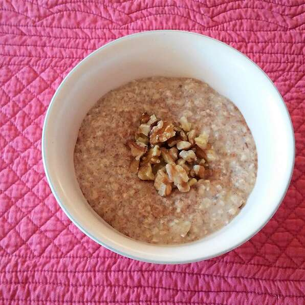

Oatmeal

Descriptiom
Easy oatmeal breakfast that keeps one full for hours. Serve cold or warm.
Ingredients
- 1 cup quick cooking oats
- 1 cup milk
- 1/2 cup Greek yogurt
- 1 banana, mashed
- 3 tablespoons flax seed meal
- 2 tablespoons peanut butter
Steps
- Whisk oats, milk, yogurt, banana, flax seed meal, and peanut butter together in a bowl.
- Refrigerate until set, at least 15 minutes.